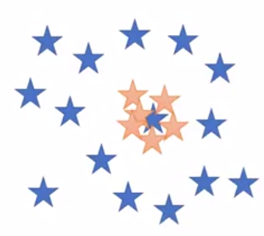
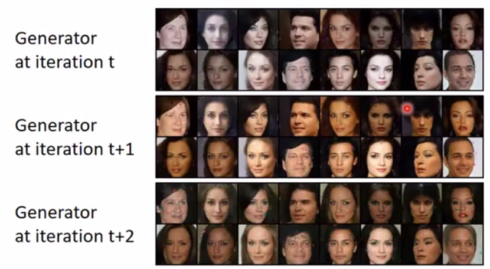
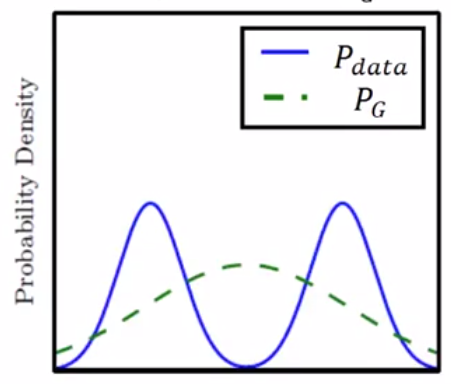
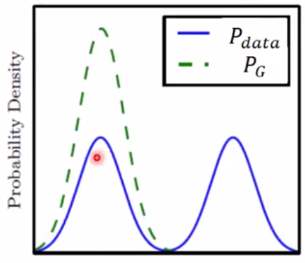

通用框架 = fGAN = framework of GAN
这是一种数学很NB但实际效果不怎么样的一种技术。
1. f-divergence
https://windmissing.github.io/mathematics_basic_for_ML/Information/Divergence.html#f-divergence
Df(P∣∣Q)=∫xq(x)f(q(x)p(x))(1)
f(x) is convex && f(1) = 0
2. Fenchel Gonjugate
https://windmissing.github.io/mathematics_basic_for_ML/Mathematics/function.html
⎩⎨⎧f∗(t)=x∈dom(f)max{xt−f(x)}f(x)=x∈dom(f∗)max{xt−f∗(t)}(2)(3)
3. GAN
由于公式（1）中的f函数是convex的，所以可以用f(x)的conjugate function来表示它。即把公式（3）代入公式（1），得：
Df(P∣∣Q)=∫xq(x)(max{q(x)p(x)t−f∗(t)})dx
t是什么？
GAN的目标是希望网络D的输入是x，输出是t，所以可以用D(x)代替t，得：
Df(P∣∣Q)≥≈=∫xq(x)(max{q(x)p(x)D(x)−f∗(D(x))})dxDmax∫xp(x)D(x)dx−∫xq(x)f∗(D(x))dxDmax{Ex∼P[D(x)]−Ex∼Q[f∗(D(x))]}(4)
以上公式中，
- 分布P代表GAN中的Pdata
- 分布Q代表GAN中的PG
- f* 可以取不同的divergence，当f∗(t)=exp(t−1)时，对应的是KL divergence。
网络G的目标是：最小化Df(Pdata∣∣PG)，即
G∗=argGminDf(Pdata∣∣PG)(5)
可以将公式（4）代入公式（5）来求G*
使用不同的f∗将得到不同的G∗和D∗
4. 为什么要使用不同的divergence？
4.1. 传统的GAN存在两个问题
指generated data分布越来越集中。

表现为：随机迭代次数的增加，某个特定的generated data开始蔓延
指Pdata有两群，generated data只能学到其中一群。
例如生成人脸每次只能生成一种肤色：

4.2. 以上问题的原因（猜测）：Divergence选得不好
观察先不同Divergence对PG拟合Pdata的效果影响。

假设Pdata的分布与图中蓝线的分布相同。使用KL divergence拟合的PG为图中绿线的效果。
表现为G很糊，不伦不类。
传统的生成算法使用最大似然估计，就会出现这种现象。

PG只能指使Pdata中的部分分布，导致某一些特定的x的PG特别高，而令一些x的PG特别低。
本文前几面介绍的GAN使用的divergence类似这种。因此会出现Mode Collapse和Mode Dropping的情况。
Mode Collapse可以看作是Mode Dropping的一种极端情况。
4.3. 解决方法
理论上更换divergence可以解决以上问题。
事实上这种方法不太有用。